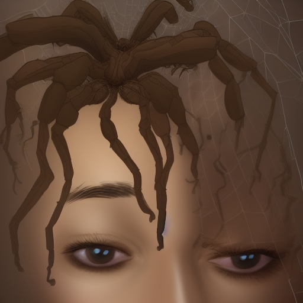

Project 3
After project 2 I felt like I should get back into drawing, so I had the idea to do my most recent dream at the time, which was of a spider on my head. I made an inital sketch in Procreate before moving the project into MediBang Paint once I decided I wanted a more painterly style.

I used Photoshop to make the image larger and added some grainy-ness to it, which felt reminiscent of the videos I made for project 2. Then I had the idea to try and use img2img AI (I used Stable Diffusion since I can run it locally on my computer, and I don't really want to upload my finished art to online img2img AI), but the results were somewhat disappointing. I've attached the best one I generated after about an hour of trying, I've heard that noise filters/grain confuses AI which may have been what happened, I'd have to test it.
My idea with the img2img AI was to make a bunch of copies based off one another and create a video (so the next one would be based off the above image and so on) but I realized that it degraded far too quickly into blobs and lines for that to work (though there may be better img2img AI that I could have used, it's not a super commonly offered service). After trying more image manipulation I decided it would be better to just draw a companion piece instead, so I thought of another dream with common themes (the spider dream took place primarily on roads as well) and I made this sketch.

There was a lot I was thinking about with this piece, I was trying to capture some sense of misremembering and haze and also this sense of dreams being an infinite space. In the actual dream there was a red car, but I found that hard to include without drawing attention away from the roads and clouds since red is such a loud color. The finished piece is below:

If I were to change anything about the second piece I would have used MediBang instead of Procreate, I think the textures the painting brushes in Procreate use are distracting and they really ended up standing out in the clouds on this piece. I've never been a fan of the super artifically textured look in digital paintings.
| Home | Project 1 | Project 2 |